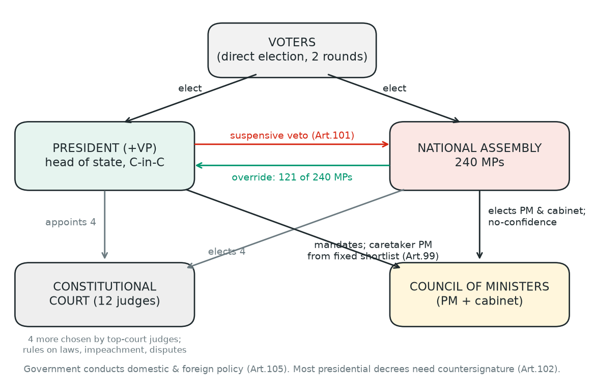
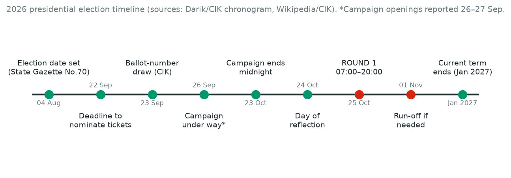
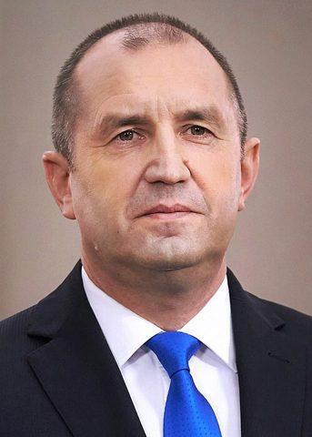
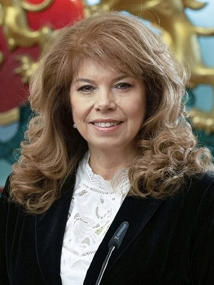
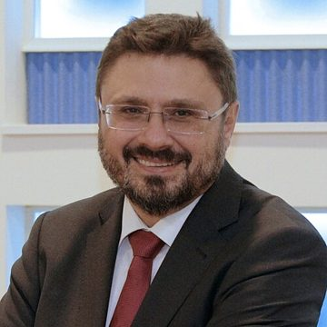
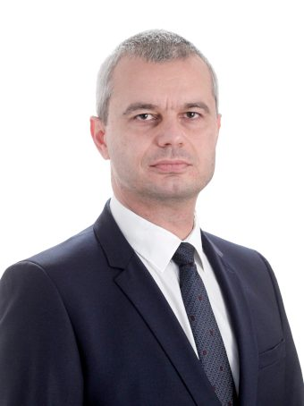

Fact: Round one is Sunday 25 Oct 2026, 07:00–20:00; a run-off would be 1 Nov. 27 tickets are on the ballot.[2][5]
Fact + estimate: Winning outright needs turnout over 50% and over 50% of valid votes. Every direct election since 1992 has gone to a run-off. Pollsters expect turnout of roughly 35–41%, so a run-off is widely expected. That is an estimate, not a result.[1][5][14][9]
Estimate: All published polls rank Iotova–Valchev first (41–50%), Gyurov–Kandev second (22–31%) and Kostadinov–Volgin third (6–13%). The latest Market Links poll has the gap at 16.7 points.[9][11][5]
Summary. Bulgaria elects a head of state with a suspensive veto, appointment and referral powers, and a caretaker-government role, but the government runs policy. The vote follows Rumen Radev's early resignation in January; he has been prime minister since May, with an absolute majority. So the race is largely about how much the presidency should act as a check on the government.[7][6]
First principles
What a president can and can't do
Tap each power to see the constitutional limit. Understood: 0/8
Veto (suspensive)
Can: Return a law to parliament once, with reasons (Art. 101).
Limit: Parliament re-passes it with more than half of all MPs = 121/240; the president must then promulgate within 7 days.[1]
Caretaker government
Can: Appoints a caretaker PM and dissolves parliament when three mandates fail (Art. 99).
Limit: Since 2023 the PM must come from a fixed list: Speaker, BNB governor/deputy, Audit Office chair/deputy, Ombudsman/deputy. Court kept this 6–6 in 2024. No dissolution in the last 3 months of the term.[1]
Commander-in-chief
Can: Supreme commander; chairs the Consultative Council for National Security (Art. 100).
Limit: Senior command appointed on the government's proposal; war/troops abroad are parliament's call (Art. 84). Emergency/war declared only if parliament is not sitting, which is then convened at once.[1]
Foreign policy
Can: Represents the state; concludes international treaties where the law says so (Art. 92, 98).
Limit: The Council of Ministers conducts domestic and foreign policy (Art. 105). Ambassadors appointed on the government's proposal.[1]
Appointments
Can: Appoints 4 of 12 Constitutional Court judges (Art. 147); appoints top judges and Prosecutor General (Art. 129).
Limit: Judicial appointments are on the Supreme Judicial Council's proposal and cannot be refused a second time.[1]
Decrees & countersignature
Can: Issues decrees and addresses (Art. 102).
Limit: Most decrees need the PM's or a minister's countersignature. Exempt: caretaker appointment, exploratory mandates, returning a law, scheduling elections/referendums, promulgation, own administration.[1]
Referendum
Can: Sets the date of a national referendum (Art. 98).
Limit: Parliament decides whether to hold one (Art. 84). The president cannot call one alone.[1]
Other levers
Can: Pardon, citizenship, asylum; refer cases to the Constitutional Court (Art. 150); propose constitutional amendments (Art. 154).
Limit: Pardons and some other powers can be delegated to the vice president (Art. 104).[1]
First principles
How the pieces fit

Systems diagram drawn from Constitution arts. 84, 99, 101, 102, 105, 147.[1]
First principles
The timeline

Campaign ends at midnight on 23 Oct. 24 Oct is the day of reflection, and no polls may be published from 00:00.
Polls are open 07:00–20:00 on 25 Oct; voters already queuing at 20:00 can vote until 21:00. Machine voting is used where a station has 300+ voters, and there are 600+ stations abroad.
A run-off on 1 Nov (CIK chronogram) happens only if nobody wins in round one.
Radev's original term ends in January 2027, so this is the regular election.[2][5][6]
First principles · worked example
The two-round rule, with real numbers
Rule (Art. 93): a ticket wins in round one if more than half of voters took partand it gets more than half of the valid votes. Otherwise the top two meet within 7 days, and whoever gets more votes wins.[1]
2021 first round (CIK): 6,691,150 voters; 2,687,307 voted. CIK reports turnout of 40.50%.[3]
Turnout test: needed more than 3,345,575 voters. It was short by 658,268.
Vote test: CIK published Radev–Iotova at 49.42% (1,322,385 votes).[4] CIK's protocol lists 2,678,082 valid votes, of which 60,786 were "I don't support anyone". Counting those in gives 49.38%, just under half. Counting only votes for tickets (2,617,078) gives 50.53%, just over. Whichever base the law uses, the turnout test alone forced a run-off.
Result: run-off on 21 Nov 2021. Radev won 66.72% to 31.80%.[29]
What-if calculator (hypothetical, not a forecast)
Context
The outgoing president and vice president

Rumen Radev. Photo: Bulgarian Presidency, Commons, CC BY 2.5 bg
Rumen Radev is a former Air Force commander. He was elected in 2016 with BSP backing and re-elected in 2021 with 66.72% in the run-off. He appointed caretaker cabinets in 2017, 2021, 2022 and 2024, and clashed often with Boyko Borisov. He was critical of sanctions on Russia and of the timing of euro adoption.[29]
He resigned on 20 Jan 2026, the only president to leave early. The Constitutional Court ended his mandate on 23 Jan, and Iliana Iotova became the first woman to hold the office.[7] He founded Progressive Bulgaria, which took 43.9% and a majority in April. He has been PM since 8 May.[6][29]
How he is judged (opinion, attributed): supporters point to his anti-oligarchy message and his landslide mandates. Western critics cited on Wikipedia, including Politico Europe and the Atlantic Council, raise concerns about his Russia stance.[29] Iotova's record is covered on her card below.
The candidates
Who is running
Each card uses the same structure. Swipe or use the arrows. Main contenders first, ordered by poll standing. Kandev and Cherkezova are shown with initials avatars because no freely licensed photo was found. (A Commons file of Kandev is marked CC0 but credited to BTA, so it was not used.)

Iliana Iotova

Kiril Valchev (VP)
Ballot No. 25
Iliana Iotova & Kiril Valchev
Background
Born 1964, Sofia. BNT journalist (1991–97), BSP press centre, MP, MEP 2007–17, vice president from Jan 2017; president since Jan 2026 after Radev resigned.[16][7]
Running mate
Born 1973. Lawyer; host of Darik Radio's "Sedmitsata" since 1994; BTA director general since 2021.[18][5]
Backers
Progressive Bulgaria, BSP-United Left, VMRO-BND and others.[5][15]
Positions
"President of peace"; no military solution in Ukraine; no Bulgarian soldiers to Ukraine; with Romania sought a Black Sea item and moratorium at the European Council.[5][31]
Case for (as argued by others)
Highest approval of any candidate (Sova Harris); continuity and predictability after years of snap elections (Novinite profile).[11][16]
Case against (as argued by others)
DSB leader Radan Kanev: her bid is "meant to leave the government unchecked".[17] PP chair Asen Vassilev raised a 2022 pardon she signed under delegated powers for a convicted trafficker later re-arrested; she cites medical and Justice Ministry assessments.[16]
Personal (sourced only)
Valchev: BTA says he has visited all 193 UN member states.[18]
Born 1975, Gotse Delchev. Co-founder of Yes, Bulgaria; PP MP and group leader; BNB deputy governor (2023); caretaker PM 19 Feb–8 May 2026.[5][6]
Running mate
Career Interior Ministry officer since 1999; Blagoevgrad police director; acting chief secretary of the Interior Ministry until June 2026, when he resigned citing pressure.[19][6]
Backers
We Continue the Change (PP), Yes, Bulgaria, DSB.[5][15]
Positions
Reliable NATO ally and active EU member, "no multi-vector policy"; Ukraine "a sovereign state attacked by Russia"; NATO Art. 4 consultations on the Black Sea. (Source is paid campaign content.)[20]
Case for (as argued by others)
Supporters frame him as an independent "corrective" to a single-party majority; Market Links shows him gaining (30.6%).[5][9]
Case against (as argued by others)
Political scientists quoted by Epicenter (June) called him a "weak candidate"; Alpha Research found only ~30% of GERB voters who plan to vote back him.[21][12]
Personal (sourced only)
None found in the sources used.
Photo: Unknown author, Wikimedia Commons, CC BY 4.0 No freely licensed photo found; initials avatar used.

Kostadin KostadinovPetar Volgin (VP)
Ballot No. 11
Kostadin Kostadinov & Petar Volgin
Background
Born 1979, Varna. Former museum director; founded Revival (Vazrazhdane) in 2014; 3.92% in the 2021 presidential first round.[5][4]
Running mate
Born 1969. BNR journalist; MEP since 2024 (not a party member).[5]
Referendums on NATO and EU membership; would seek annulment of euro entry; "active neutrality".[22][23]
Case for (as argued by others)
Supporters see a clear sovereigntist alternative; DW notes Revival's solid core vote holds up at low turnout.[14]
Case against (as argued by others)
International coverage, e.g. Balkan Insight, places Revival among Russia-sympathetic campaigns; Vesti notes his Ukraine position departs from the common international reading.[15][22]
Other tickets on the ballot (27 in total) include Aleksandar Tomov (Deputy PM 1990–91)[32], Volen Siderov (Ataka founder)[33], Nikolay Nenchev (BZNS, defence minister 2014–17)[34], and Ivaylo Simeonov (mayor of Elin Pelin). One ticket was struck off for too few valid signatures (2,096 of the 2,500 needed). Full list: Darik and Wikipedia.[5][6]
The numbers (estimates)
Latest polls
Green = Iotova–Valchev, red = Gyurov–Kandev, grey = Kostadinov–Volgin.
Figures are each pollster's published base, as compiled by Darik, BTA and Capital, and are not directly comparable. Market Links' September figures include 20.4% undecided; Wikipedia recalculates Gallup to 47.8/26.4/11.6 excluding undecided. *Sample sizes marked * are from the Wikipedia poll table and were not seen in the pollster's own release. Exacta: no poll for this race was found. Sova Harris hypothetical run-off: Iotova 65.8 vs Gyurov 34.2 (±3.1, n=1,000). Expected turnout: Market Links ~39%, Sova Harris 38.1%, Alpha ~37%.[9][11][12][10][6]
Before any conclusions
Two questions to sit with
If a veto can be overridden by 121 votes and the governing group holds 131, which presidential powers still matter in practice: appointments, Constitutional Court referrals, the caretaker role, the public platform?
A first-round leader on under 50% with turnout under 40% may have the backing of fewer than one registered voter in five. What kind of mandate is that? Would you judge it differently if it were your preferred candidate?
Next
Go deeper, in order
Watch: president.bg for the presidency's official statements. Its video section was not checked.[31]
Listen: no verified audio programme is linked. The BNR English service (Radio Bulgaria) is the obvious place to look; its turnout article is here.[13]
Read: Balkan Insight on how first-round votes may transfer.[15]
Read: the pollsters' releases via BTA and Capital.[12][11][9][10]
Fact, estimate, opinion
Facts come from the constitution, CIK and official decisions. Estimates are polls and turnout forecasts. Opinion is always attributed to a named person or outlet. X public search was not used for any claim. Reuters was unreachable (HTTP 401) and is not cited. One Darik positions page is paid campaign content and is labelled as such.
.jpg){kind=link}
.jpg){kind=link}

.jpg){kind=link}
.png){kind=link}


.png){kind=link}
.png){kind=link}
.png){kind=link}
.png){kind=link}